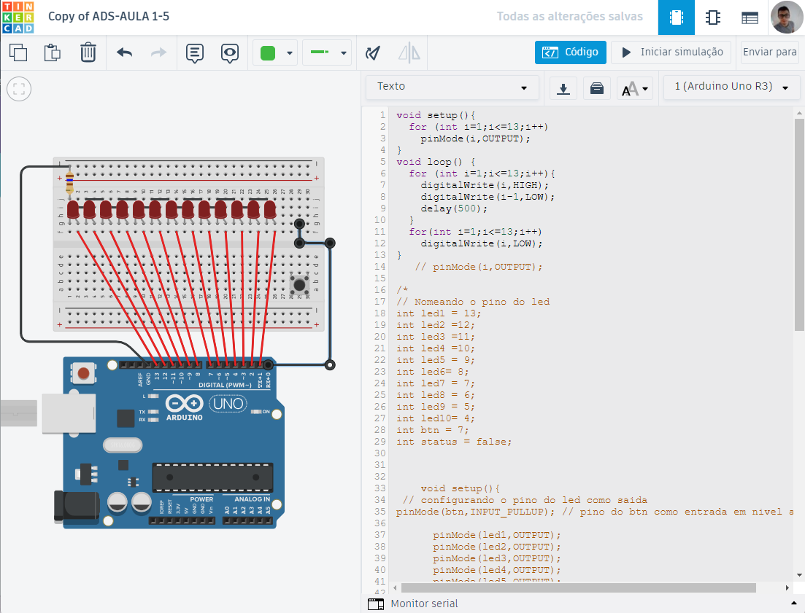

<div class="projeto" id="projeto_Automacao4"> <!--LINK-->
    <h5>Arduino-for</h5>
      <div class="conteudo_projeto">
          
          
          
          
      </div>
  </div>
  <!-- interacao Java Script para a janela dos projetos (CURRÍCULO) -->
  <div class="zoom_projetos" id="zoom_projeto_Automacao4">
      <div class="btn_fechar" id="btn_fechar_Automacao4"></div>
      <div class="contem_projeto_zoom">
          <div class="projeto_foto"> 
              

          </div>
          <div class="coluna_projeto_zoom">
              <div class="titulo_projeto">
                  <h3>Arduino-for</h3>
              </div>
              
              <div class="linguagens_usadas">
                  <h4>Linguagens :</h4>
                  <section class="logo_linguagens">
                  
                  </section>
              </div>
              <div class="desenvolvedores">
                  <h4>Desenvolvedores :</h4>
                  <table>
                      <tr>
                          <td>André L. Bastida</td> 
                          <td><a href="https://github.com/Andrelbastida"></a></td>
                      </tr>
                  <!--        Campo Para outros desenviolvedores !!!
                      <tr>
                          <td>Outro Nome</td>
                          <td><a href=""></a></td>
                      </tr>
                  -->
                  </table>
                  <p></p>
              </div>
              
              <div class="links_gitHub">
                  <h4>Link do Projeto:</h4>
                  <p>
                      <a href="https://www.tinkercad.com/things/kmw0x1CXbqY-copy-of-ads-aula-1-4/editel?sharecode=FPdG2aFZtg92aokhtmPxX7ySN8Pv5T0db65hLQmhuk4"></a>
                  </p>
              </div>
              
                  <h4>Descrição :</h4>
                  <h5>
                    Este projeto é igual ao anterior, porém, assim que o led acender, terá um delay de 0.5 segundos, apagando o mesmo e acendendo o próximo. 
                      </h5>
                  

              
              

          </div>

      </div>
      

  </div>
